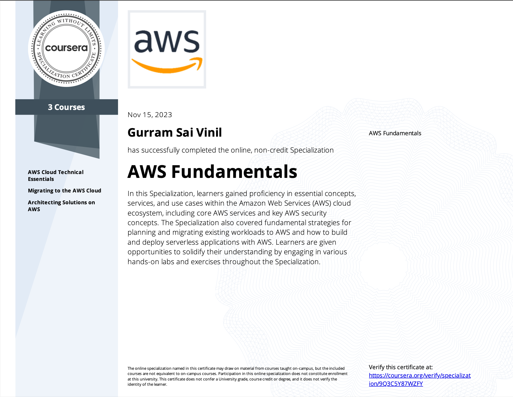
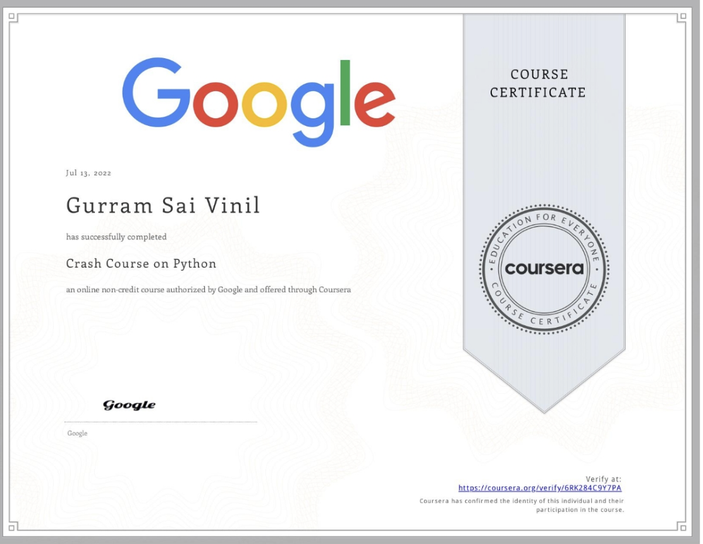
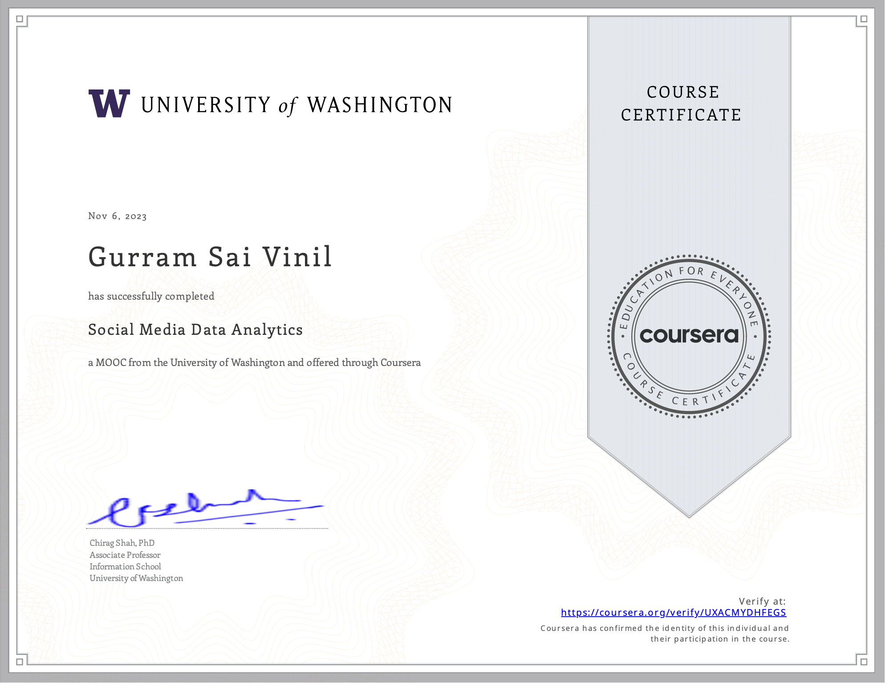
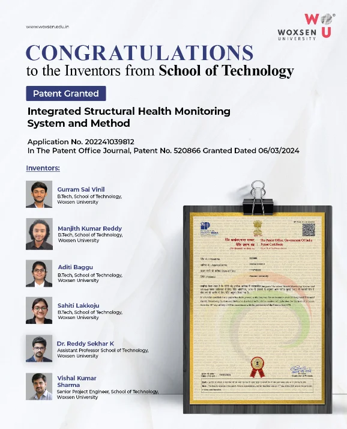

Gurram Sai Vinil
Aspiring Data Scientist & AI Engineer committed to leveraging data-driven solutions and machine learning to solve real-world challenges.
See My WorkAbout Me
Hi, I'm Gurram Sai Vinil—an AI and Data Science enthusiast. With a strong foundation in machine learning, deep learning, and advanced analytics, I build innovative solutions that drive decision-making. I hold a B.Tech in Artificial Intelligence & Data Science from Woxsen University and have hands-on experience through internships and real-world projects.
Skills
Experience
Data Scientist Intern - Cyient
January 2024 - May 2024 | Hyderabad, Telangana
- Developed statistical methods for engine performance analysis.
- Created a deployable Streamlit dashboard for data visualization.
Research Intern - Appstek Corp
February 2023 - July 2023 | Hyderabad, Telangana
- Enhanced image quality using deep learning models.
- Led super-resolution initiatives for image upscaling.
Certifications

AWS Fundamentals
Specialization covering AWS Cloud Technical Essentials, Migrating to the AWS Cloud, and Architecting Solutions on AWS

Google Crash Course on Python
Completed a comprehensive Python programming course

Social Media Data Analytics
Completed Social Media Data Analytics course
Patent Achievement
Integrated Structural Health Monitoring System and Method
Proud to be one of the inventors of a patented system for structural health monitoring, showcasing innovation and commitment to advanced engineering solutions.
Patent No: 520866
Application No: 202241039812
Filing Date: July 11, 2022
Grant Date: March 6, 2024
Patentee: Woxsen University

Projects
AI Lumbar Spine Degeneration Detection and Classification
Developed a deep learning model using EfficientNet to detect and classify lumbar spine degeneration from DICOM images. Pre-processed medical imaging data and optimized model performance.
View on GitHubMultilingual Audio/Youtube Video Processing and Summarization System
Created a Python-based system using advanced NLP models (transformers, moviepy, pytube) for audio extraction, transcription, language detection, translation, and summarization.
View on GitHubPCOSCare: Prediction, Management & Mental Health Support System
Implemented machine learning-based PCOS prediction along with a RESTful API, integrated with an AI chatbot using Gemini API to deliver personalized healthcare support.
View on GitHubBlogs
AI-Powered Media Pipeline: From Video Downloads to Intelligent Transcriptions and Summaries
October 4, 2024
Discover how AI transforms media processing! From video downloads to speech transcription and smart summaries, this project automates it all.
Read MoreBuilding a Smart File-Based Question Answering Assistant with OpenAI’s GPT-4o API
October 5, 2024
We built a powerful assistant capable of handling multiple file types and efficiently extracting specific information.
Read MoreMastering AI Evaluations with OpenAI Evals: Building Reliable and Creative AI Models
October 8, 2024
OpenAI Evals help us understand how well an AI model is performing while encouraging creative model development.
Read MoreReach Out
If you’d like to collaborate or have any questions, feel free to reach out to me at: saivinilreddy@gmail.com